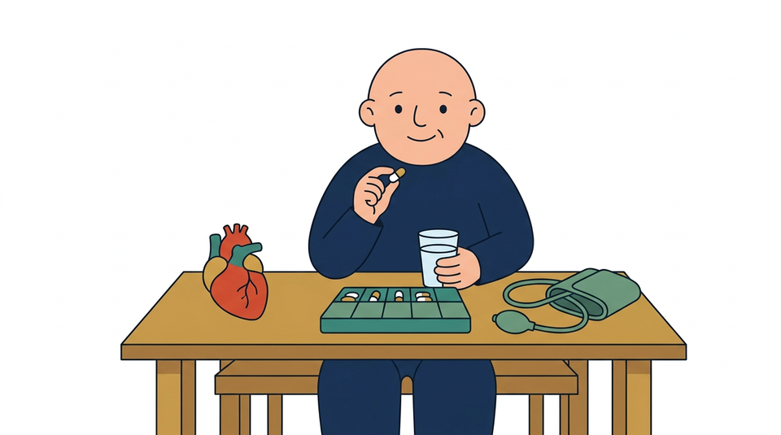
Farmaci ogni giorno
Pressione alta, diabete o colesterolo: prendi le medicine ogni giorno anche se ti senti bene. Non sospenderle mai da solo.
Prenota da solo in 1 minuto su Doctolib. Usa il telefono solo per le vere urgenze.
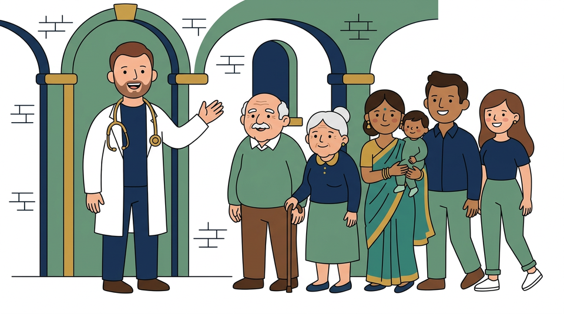
Inquadra il codice con la fotocamera o vai su: prenota.savianu.it
CHIAMA SOLO SE: non riesci a usare Doctolib · hai un problema urgente di oggi · non puoi muoverti da casa (chiama la mattina 09:30–10:30 per la visita domiciliare). Non chiamare per ricette abituali.
Per il certificato di malattia è obbligatoria la visita in studio il primo giorno (la legge vieta di farlo per telefono). A ogni visita porta le scatole di tutti i farmaci che prendi.
Chiedi consiglio in farmacia per disturbi lievi (raffreddore, tosse lieve). Chiama il numero verde CUP o vai in farmacia per prenotare esami e visite specialistiche con l'impegnativa.
Attiva di notte, sabato, domenica e festivi, o se il medico non c'è. Numero gratuito per problemi urgenti ma non mortali (rilascia anche il certificato di malattia nei festivi).
Solo per pericolo di vita: forte dolore al petto, mancanza di respiro, svenimento, paralisi improvvisa, incidente o emorragia grave. Non andare al Pronto Soccorso per problemi lievi.
Consigli pratici del tuo Medico di Famiglia · Pag. 2/2
1. Uso sicuro delle medicine e prevenzione

Pressione alta, diabete o colesterolo: prendi le medicine ogni giorno anche se ti senti bene. Non sospenderle mai da solo.
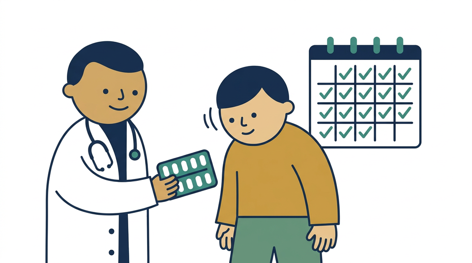
Prendili solo se li prescrive il medico (non servono per virus, raffreddore o influenza). Finisci sempre tutta la scatola.
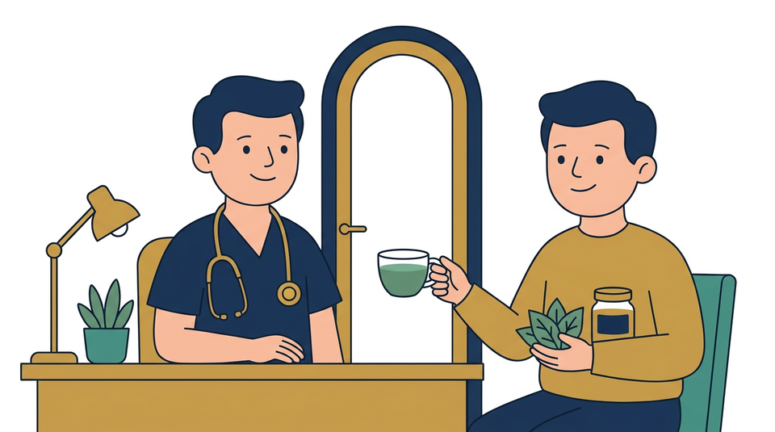
Avvisa sempre il medico se usi tisane, erbe, integratori o medicine tradizionali: possono alterare l'effetto dei farmaci.
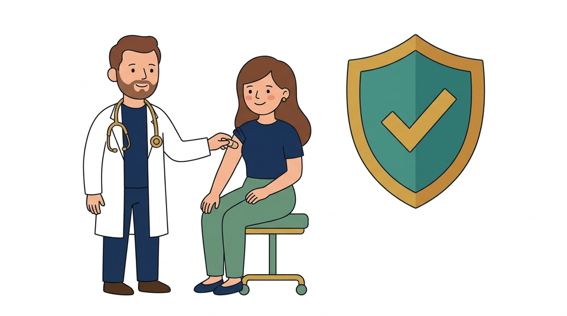
Proteggono te e la tua famiglia dalle malattie gravi. Chiedi al medico quali vaccini e controlli gratuiti sono indicati per te.
2. Alimentazione e movimento quotidiano
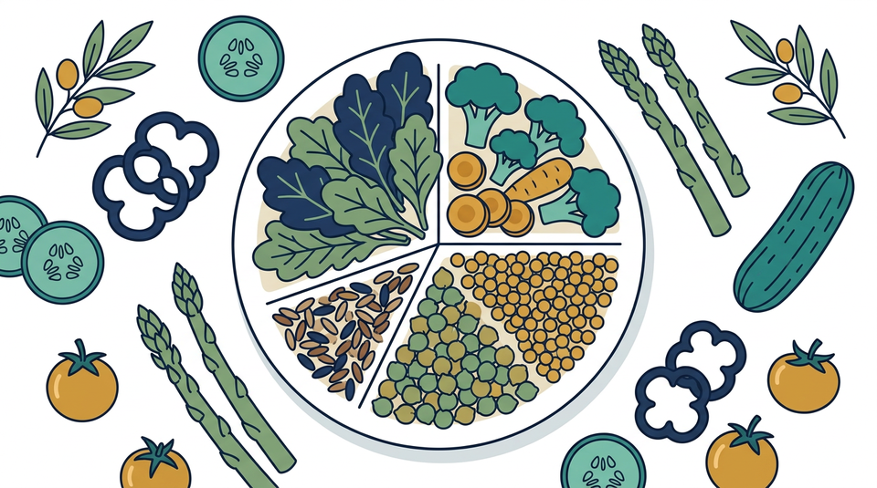
Mangia più verdure a foglia verde, legumi (lenticchie, ceci) e cereali integrali. Riduci riso bianco, pane bianco, fritture e dolci.
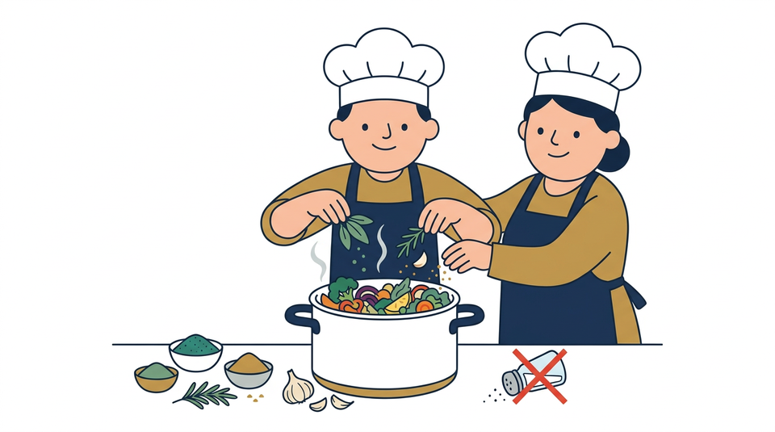
Troppo sale alza la pressione. Usa spezie, aglio, limone ed erbe aromatiche naturali per dare sapore ai cibi.
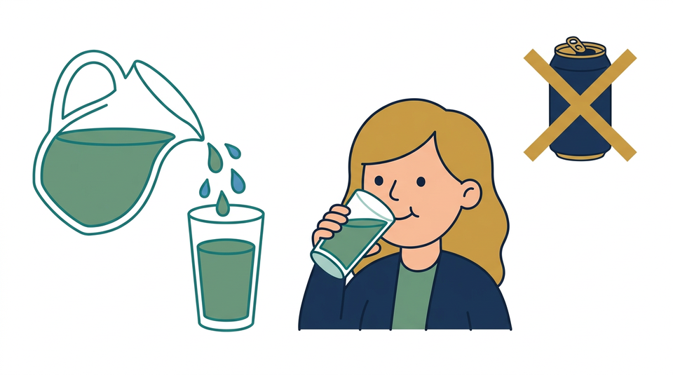
Bevi 1,5–2 litri di acqua al giorno. Evita bibite gassate, tè zuccherati e succhi di frutta confezionati (contengono molto zucchero).
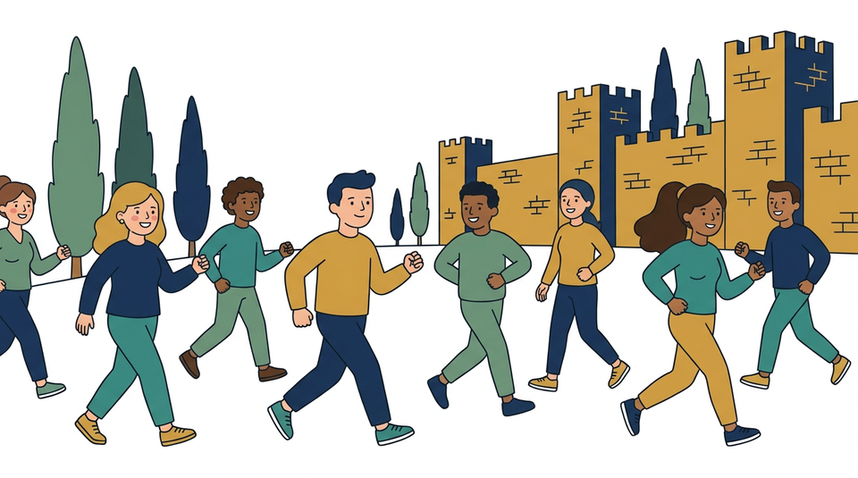
Cammina a passo svelto ogni giorno: abbassa la glicemia, regola la pressione, controlla il peso e riduce lo stress.
3. Benessere della mente e riposo
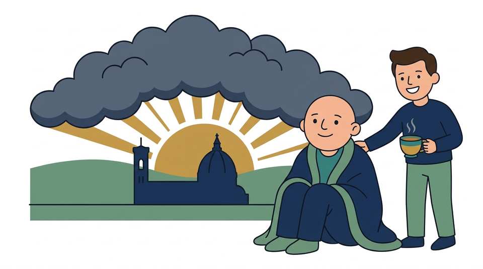
Tristezza, ansia o stanchezza profonda non sono una colpa. Se non riesci più a fare le cose di sempre, parlane senza paura col tuo medico.
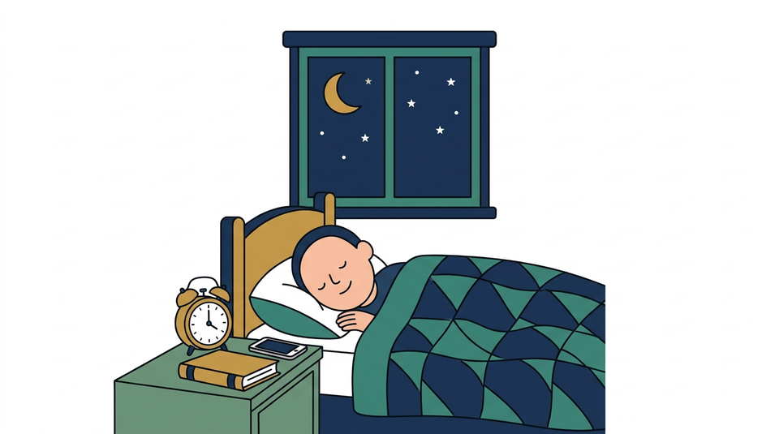
Il sonno ripara mente e corpo. Mantieni orari regolari, spegni gli schermi del telefono prima di dormire e prendi aria ogni giorno.